바이브 코딩 프로젝트
Claude AI와의 대화만으로 기획하고 구현한 웹 게임·웹앱·챗봇·QA 학습 도구·기획서 모음
바이브 코딩 · 머지 퍼즐
슬라임 게임 — 킹 슬라임을 만들어라

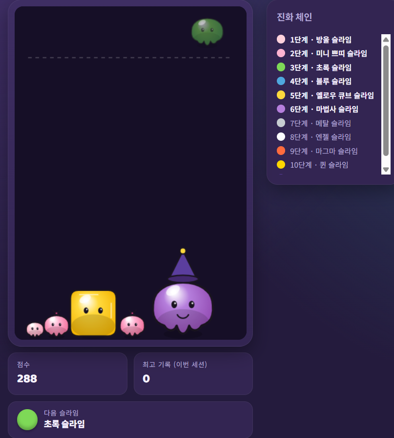

같은 등급의 슬라임을 합쳐 킹 슬라임까지 성장시키는 머지 퍼즐 게임. 솔로 모드에 더해 PeerJS 기반 P2P 1:1 멀티 대결 모드까지 프롬프트만으로 구현했습니다.
- 같은 등급 슬라임을 합쳐 상위 등급으로 성장시키는 머지 코어 루프
- PeerJS(WebRTC) 기반 P2P 1:1 멀티 모드 — 양쪽 보드 실시간 표시
- 메인 → 모드 선택 → 멀티 설정 → 대결로 이어지는 화면 흐름 설계
바이브 코딩 · 뱀서라이크
BLOODFALL — 뱀서라이크 협동 프로토타입
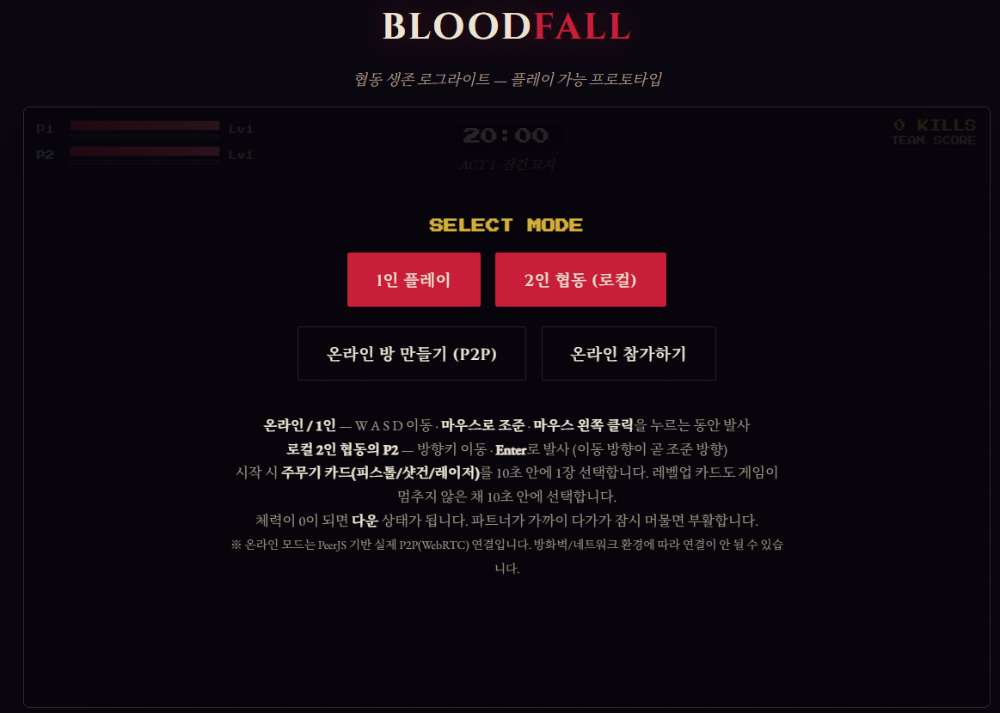
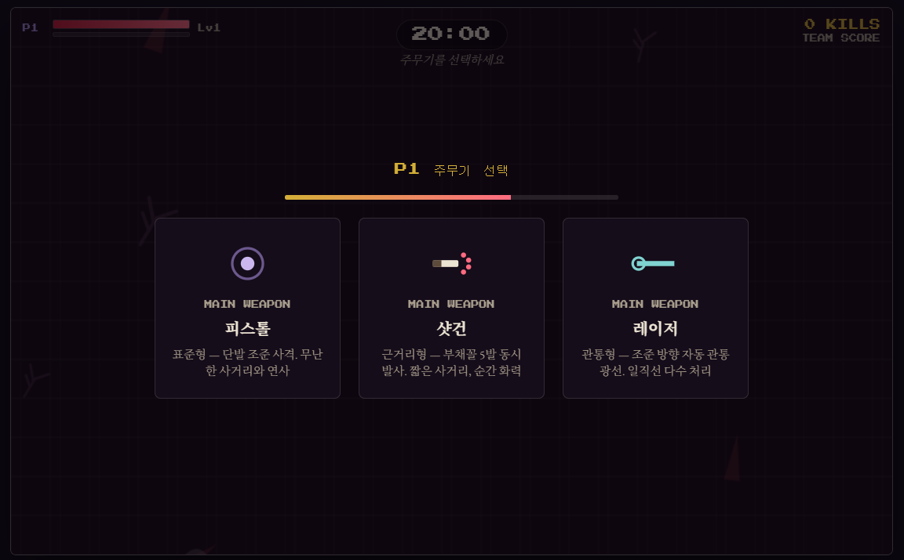
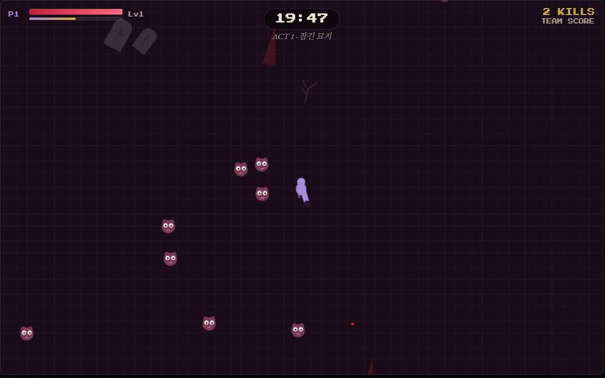
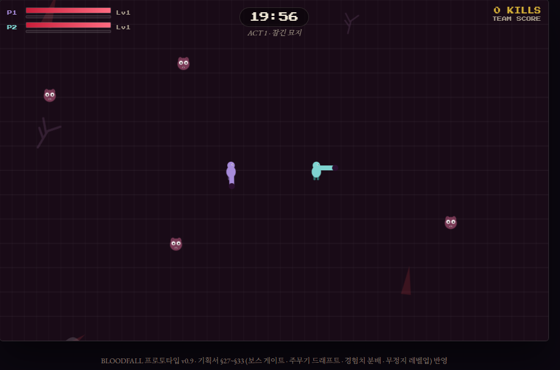
몰려오는 적을 무기 성장으로 버텨내는 뱀서라이크 프로토타입. 직접 작성한 기획서 조항(§27~§33)을 프롬프트로 전달해 시스템 단위로 구현·검증했습니다.
- 주무기 드래프트 — 시작 시 피스톨·샷건·레이저 중 1개를 10초 안에 선택
- 보조무기 4종(채찍·오라·수리검·드론) + 최대 레벨 도달 시 무기 진화(조합) 시스템
- 게임이 멈추지 않는 무정지 레벨업 카드 선택 · 보스 게이트 · 경험치 분배
- PeerJS(WebRTC) 기반 P2P 온라인 협동 모드 — 다운/부활 시스템 포함
바이브 코딩 · 로그라이크
아이작식 로그라이크 프로토타입
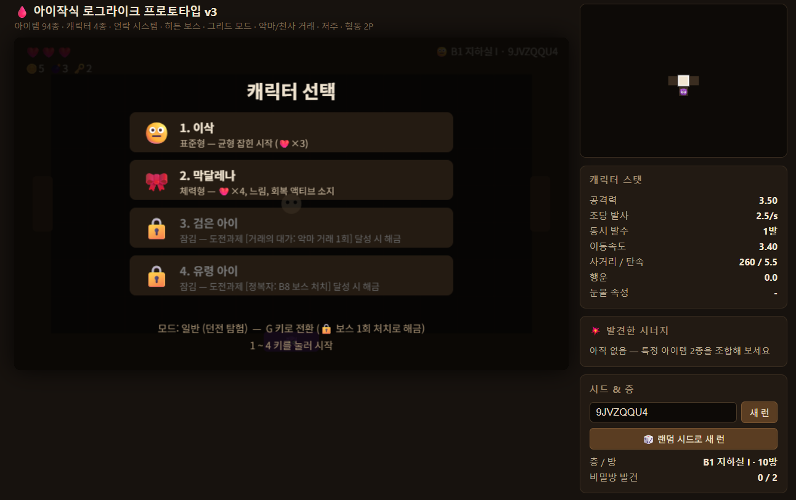
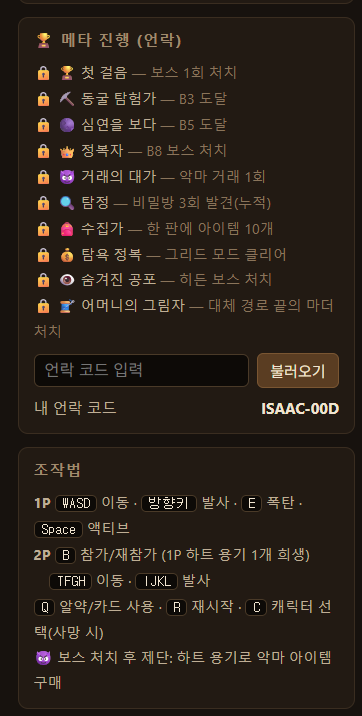
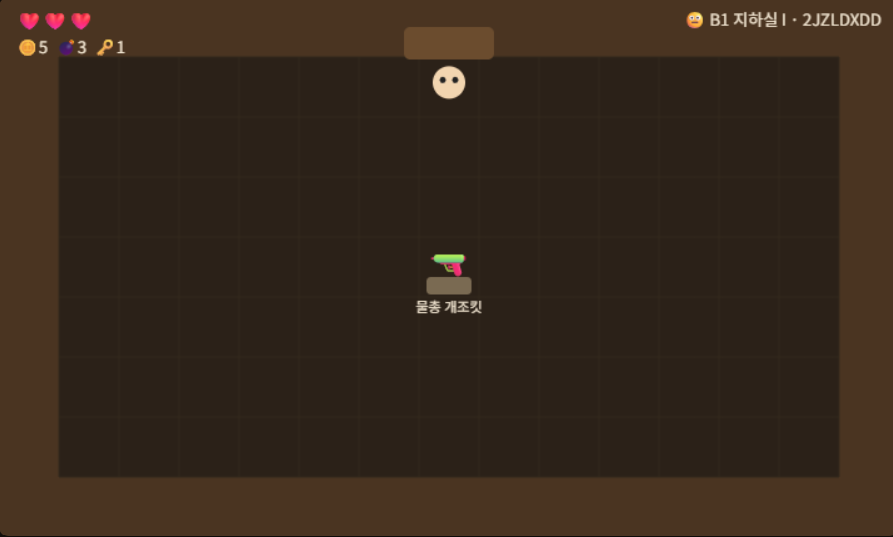
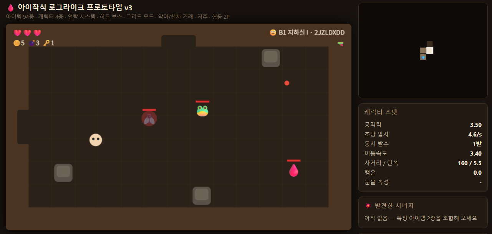
아이작의 번제를 역기획 분석한 뒤, 몬스터 도감·아이템 시너지·협동 아기 시스템을 직접 기획해 검증하는 프로토타입. 기획서의 시스템이 실제 플레이에서 의도대로 작동하는지 확인하는 용도로 제작했습니다.
- 아이작 역기획서 작성 후 차별화 시스템(도감·시너지·협동 아기)을 별도 기획
- 기획서 → 프로토타입 → 플레이 검증으로 이어지는 반복 사이클 실행
- v1부터 v3까지 플레이 피드백을 반영해 기믹·밸런스 개선
바이브 코딩 · P2P 협동
Lucky Friends — P2P 카지노 협동전


친구와 함께 카지노에서 운을 겨루는 P2P 협동전 프로토타입. 일차별 할당량을 채우며 층을 올라가는 진행 구조와 파산 엔딩까지 하나의 게임 루프로 구현했습니다.
- 일차별 할당량 달성 → 다음 층 진출로 이어지는 스테이지 진행 구조
- 층별 도박장(2층·3층)과 오리 경주 등 종류가 다른 도박 미니게임
- 할당량 실패·자금 소진 시 파산 엔딩 분기
바이브 코딩 · AI 퀴즈
게임 지식 퀴즈
게임 상식을 테스트하는 퀴즈 게임. 고정된 문제 은행이 아니라 Claude API에 주제·난이도를 전달해 4지선다 문제를 실시간으로 생성합니다.
- 주제·난이도 선택 시 Claude API가 4지선다 문제를 JSON 형식으로 생성
- 정답 확인 후 해설 제공으로 학습형 퀴즈 루프 구성
- AI 응답 형식을 JSON으로 강제해 파싱 오류 리스크 통제
바이브 코딩 · QA 학습 도구
ISTQB CTFL v4.0 문제은행 — 자격증 대비 퀴즈 앱
준비 중인 ISTQB Foundation Level 자격증을 스스로 공부하려고 만든 문제 풀이 앱. 공식 실러버스 v4.0.1과 공식 샘플문제 4세트를 원본 자료로 삼아, 난이도를 하·중·상 3단계로 나눈 363문항 문제은행을 구성했습니다. 기획서를 먼저 쓰고 그 명세대로 구현·검증했습니다.
- 하 난이도는 공식 샘플문제 186문항을 원문 그대로 수록, 중·상 난이도는 실러버스 근거로 신규 출제
- 챕터별 문항 수를 실러버스 시간 배분 비중(4·5장 최다)에 맞춰 배분
- 모의고사 모드 — 40문항 무작위 출제 + 60분 타이머, 실제 합격선인 65%(26문항) 기준 채점
- 오답노트 자동 수집과 챕터별·난이도별 정답률 통계
- 외부 API·서버 없이 단일 HTML 파일로 동작하도록 문제 데이터를 내장
바이브 코딩 · 캐릭터 챗봇
크로우의 만물상 — 행운과 기억을 거래하는 챗봇
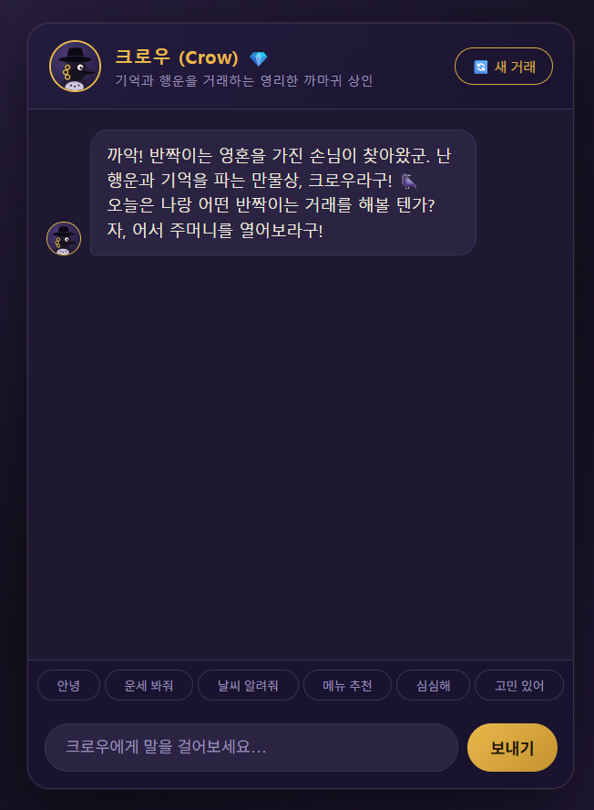
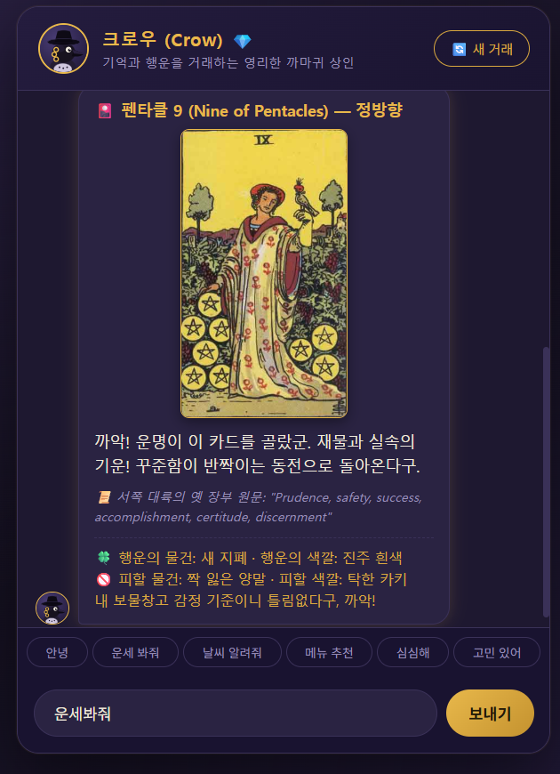
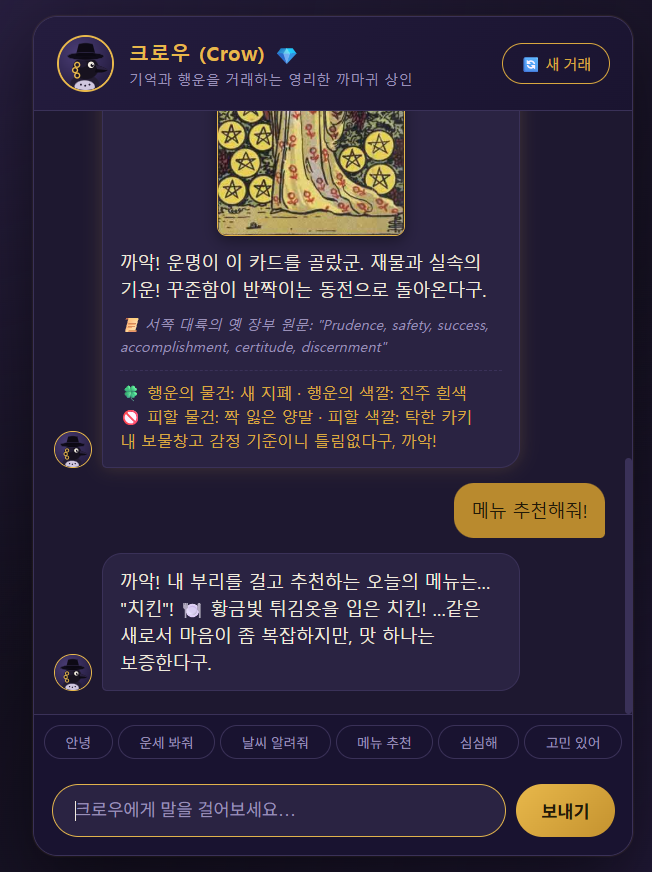
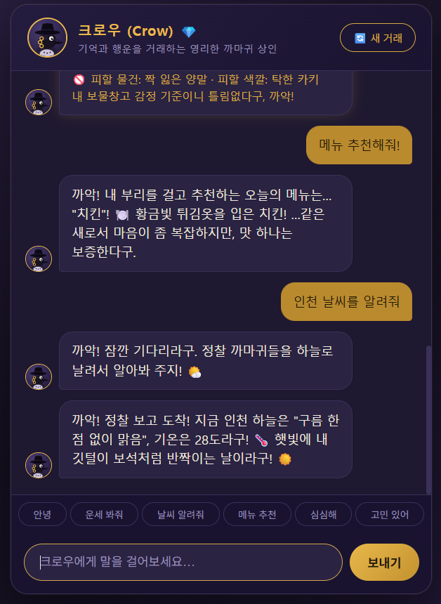
행운과 기억을 거래하는 상인 '크로우'와 대화하는 AI 캐릭터 챗봇. 캐릭터 설정과 말투를 프롬프트로 설계해 세계관에 몰입할 수 있는 대화 경험을 만들었습니다.
- 상인 캐릭터의 세계관·성격·말투를 시스템 프롬프트로 설계
- 대화 UI와 캐릭터 연출을 포함한 챗봇 화면 구성
- 캐릭터가 설정을 벗어나지 않는지 대화 시나리오로 검증
바이브 코딩 · 웹 앱
REELVAULT — 영화 정보 웹 앱
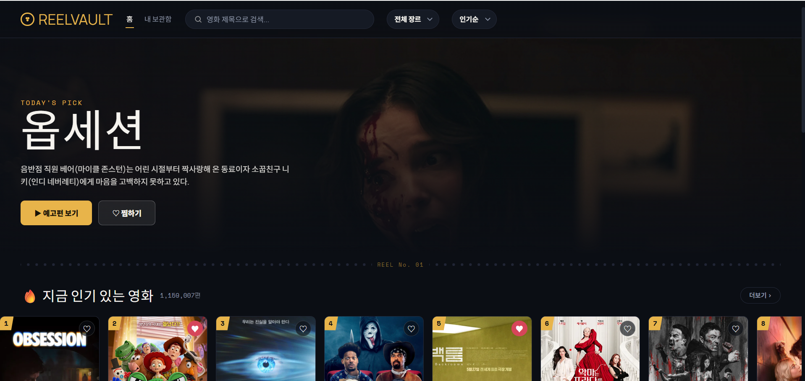


영화를 탐색하고 소개하는 영화 정보 웹 앱. 검색·장르 선택·상세보기·찜 목록까지 정보 탐색 앱의 핵심 사용자 흐름을 갖췄습니다.
- 검색과 장르 선택으로 영화를 탐색하는 브라우징 흐름
- 포스터·정보를 보여주는 상세보기 창
- 관심 영화를 저장하는 찜 목록 기능
바이브 코딩 · 미니 기획서
실시간 카페 좌석 & 콘센트 지도
카페 좌석과 콘센트 현황을 실시간으로 공유하는 서비스 아이디어를 미니 기획서로 정리한 문서 프로젝트. 게임 외 도메인에서도 기획·문서화 역량을 적용할 수 있음을 보여줍니다.
- 서비스 컨셉과 핵심 기능을 정리한 미니 기획서 작성
- HTML·MD·PPTX 세 가지 포맷으로 문서화